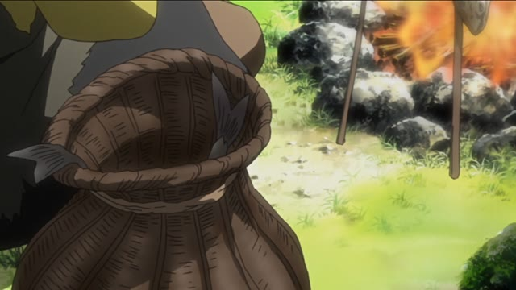
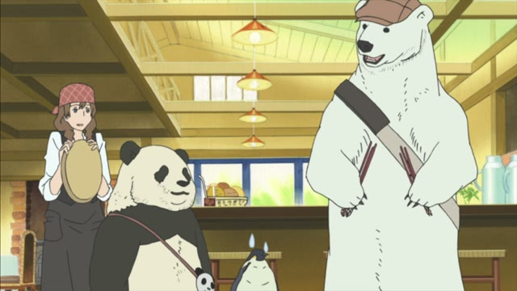
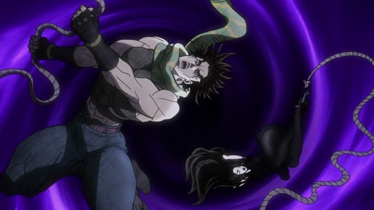

Vocabulary
ことわざ
Proverbs, heard in real shows
魚を与えるのではなく魚の捕り方を教える

Samurai Champloo · Episode 21
魚を与えるのではなく 魚の捕り方を教える
"Don't give someone a fish, teach them how to catch fish."
- Means
- Teaching someone to do it lasts longer than doing it for them.
- English
- "Give a man a fish, and you feed him for a day..."
- Note
- Not Japanese originally: the next line is your mined card, 大陸の古いことわざです "an old saying from the continent".
三人寄れば文殊の知恵

Shirokuma Cafe · Episode 9
え～っと… 三人寄れば 文殊の知恵
"Um... three heads together make Monju's wisdom."
- Literally
- If three people get together, you get the wisdom of Monju (a Buddhist figure of wisdom).
- Means
- Three ordinary people thinking together are as smart as a genius.
- English
- "Two heads are better than one."
三度目の正直
Slam Dunk · Episode 99
三度目の正直 今度こそ
"Third time's the charm. This time for sure."
- Literally
- The third time is the honest one.
- Means
- After two misses, the third try is the one that works.
- English
- "Third time's the charm."
一石二鳥

JoJo's Bizarre Adventure · Episode 24
馬鹿め これで一石二鳥
"Fools! That's two birds with one stone."
- Literally
- One stone, two birds.
- Means
- One action gets you two good results.
- English
- "Kill two birds with one stone." Same picture, just four kanji.
終わりよければ全てよし
Slam Dunk · Episode 74
終わりよければ全てよし
"All's well that ends well."
- Literally
- If the end is good, everything is good.
- Means
- What happened along the way doesn't matter if it ends well.
- English
- "All's well that ends well." Almost word for word.